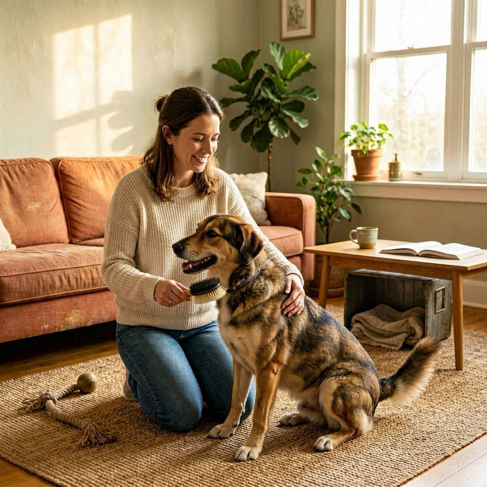

Safe home
Provide appropriate shelter, supervision, routine, exercise, affection, and separation when introductions require it.
Get involved with a mission built on compassion instead of judgment.
Become a Leash Holder
Unlike traditional rescue fostering, the dogs in our program already have families who love them and want them back. Second Leash foster volunteers - Leash Holders, provide a safe, loving temporary home while a dog’s owner works through a diffcult time. Our Leash Holders serve to bridge the gap between crises and reunion.
Placements vary in length and needs. We work to make thoughtful matches and explain what is known before a foster accepts a dog. Whether you can foster for a few weeks or several months, your help matters.

Provide appropriate shelter, supervision, routine, exercise, affection, and separation when introductions require it.
Share timely updates and notify Second Leash about concerns, changes, incidents, or veterinary needs.
Honor the agreed care period when possible and give as much notice as possible if circumstances change.
Follow feeding, medication, safety, and veterinary authorization instructions.
Do not transfer, rehome, breed, sell, or permanently keep a foster dog.
Help prepare the dog for a safe, calm transition back to their owner.
Additional requirements may apply based on the dog or placement.
Fostering may involve adjustment periods, accidents, barking, separation stress, transportation, medication, or slow introductions. You will receive the information available to us, but no organization can predict every behavior in a new environment.
Foster interest